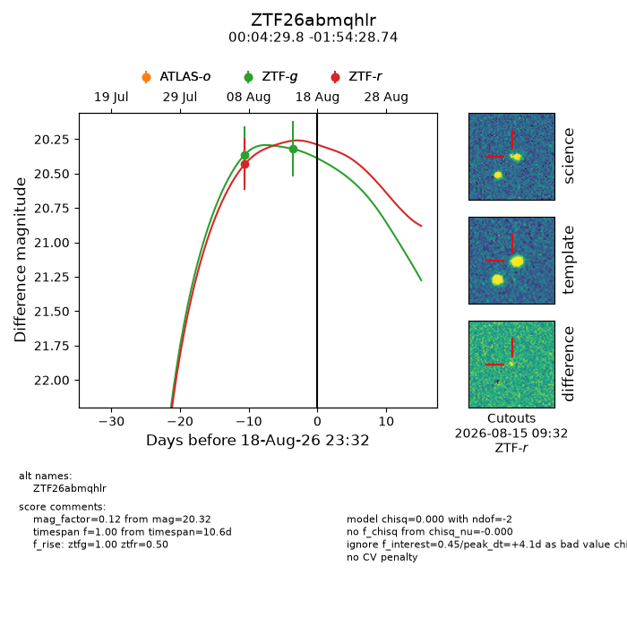
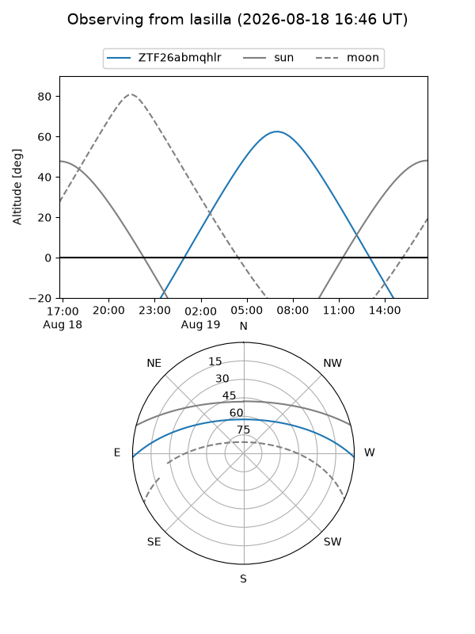
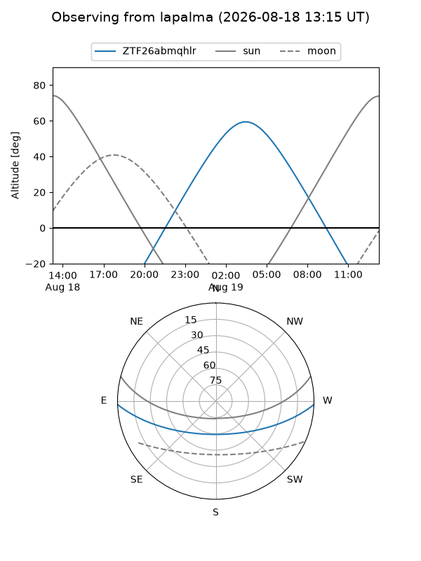
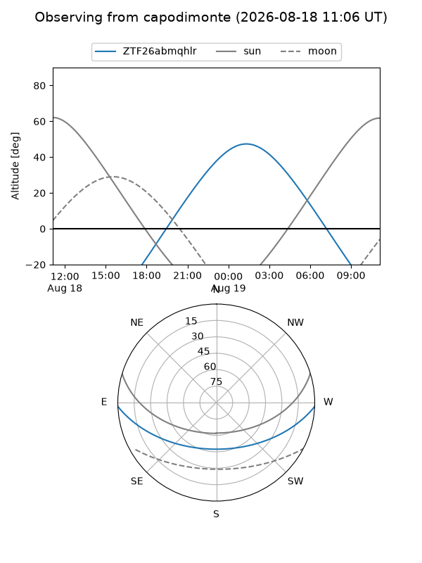
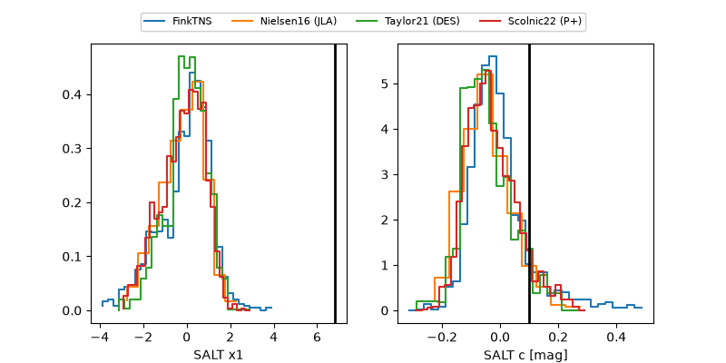

ZTF26abmqhlr
Target ZTF26abmqhlr at 2026-08-19 11:13
Aliases and brokers:
FINK-ZTF: ztf.fink-portal.org/ZTF26abmqhlr
Lasair-ZTF: lasair-ztf.lsst.ac.uk/objects/ZTF26abmqhlr
ALeRCE-ZTF: alerce.online/object/ZTF26abmqhlr
Direct TNS query: direct search
alt names
ZTF26abmqhlr (ztf,fink_ztf)
Coordinates:
equatorial (ra, dec) = 1.1242,-1.90798
equatorial (HMS+DMS) = 00:04:29.81,-01:54:28.74
galactic (l, b) = (96.9207,-62.38521)
Flags:
peak dt: +4.6
Photometry:
last ztfg=20.32, ztfr=20.43
2 ztfg, 1 ztfr detections
Lightcurve

Visibility



Additional plots
